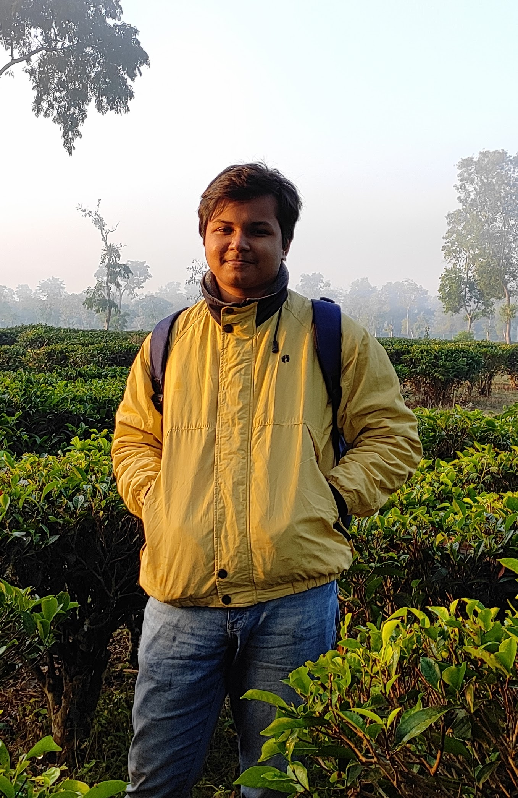

About
My name is Torikul Islam Sanjid, everyone calls me Sanjid. I hold B.Sc. and M.Sc. degrees in Physics from Shahjalal University of Science and Technology (SUST) in Bangladesh, and I am currently looking for PhD opportunities starting in 2027.
Since my fourth year as an undergraduate, I have been actively involved in climate and atmospheric research, with a strong interest in weather and climate extremes. For my master’s thesis, I analyzed heatwaves in Bangladesh from 1971 to 2024 to understand their trends and underlying mechanisms. I have also worked on extreme precipitation events, including the heavy rainfall that caused the August 2024 flood. More recently, I have been working to identify the causes and mechanisms behind South Asian precipitation biases in climate models.
To see more about my qualifications, check out the Curriculum Vitae section.